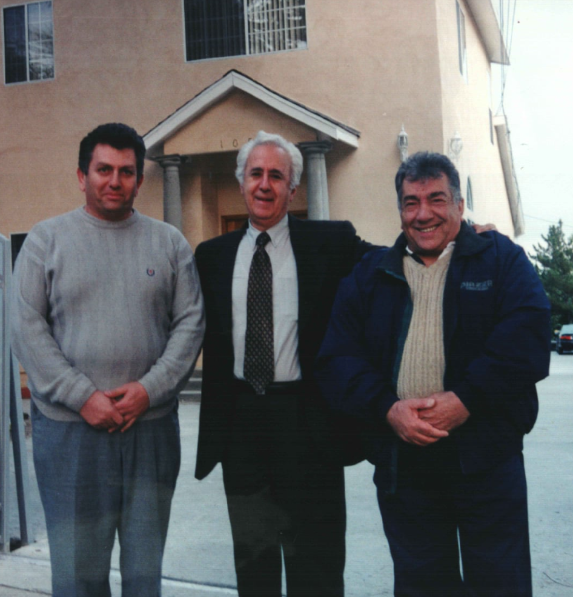
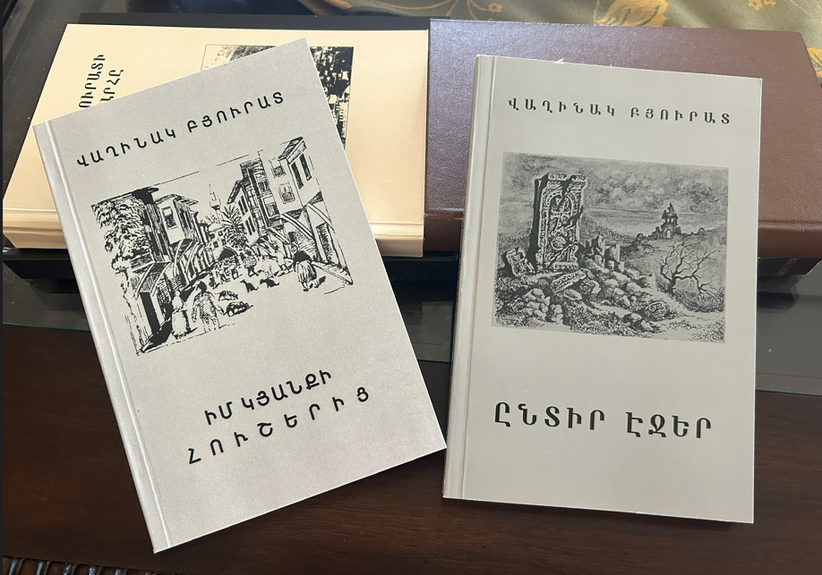
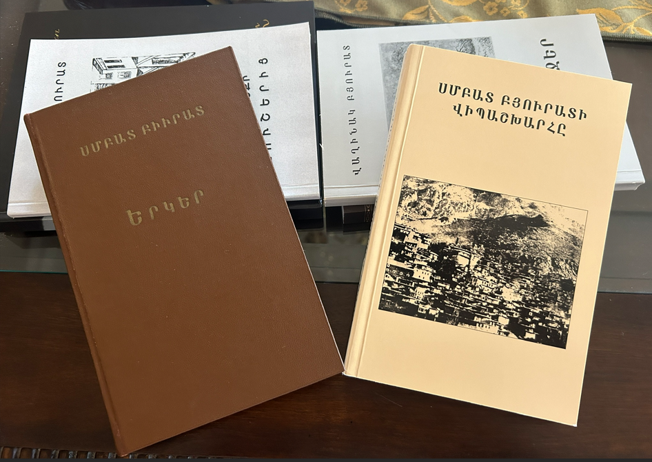
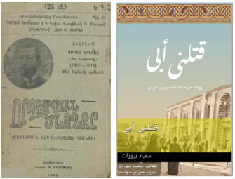
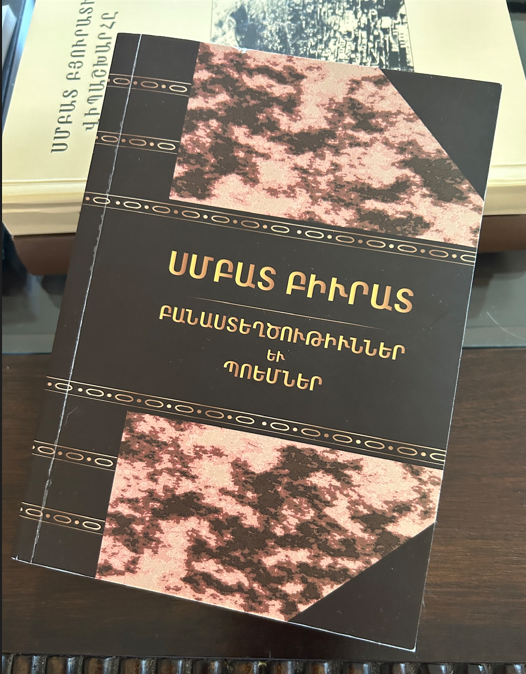
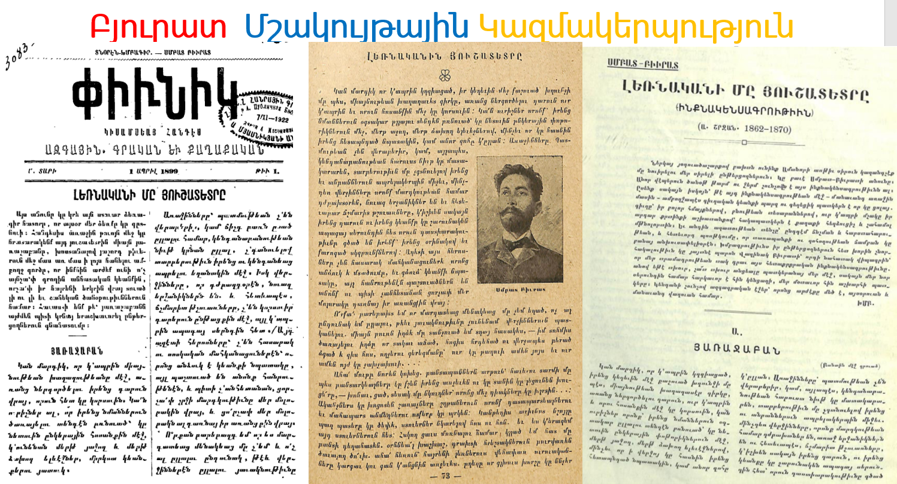
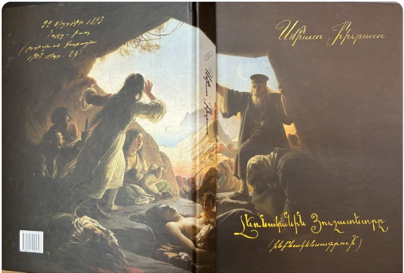
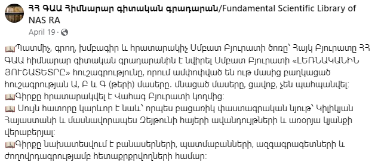
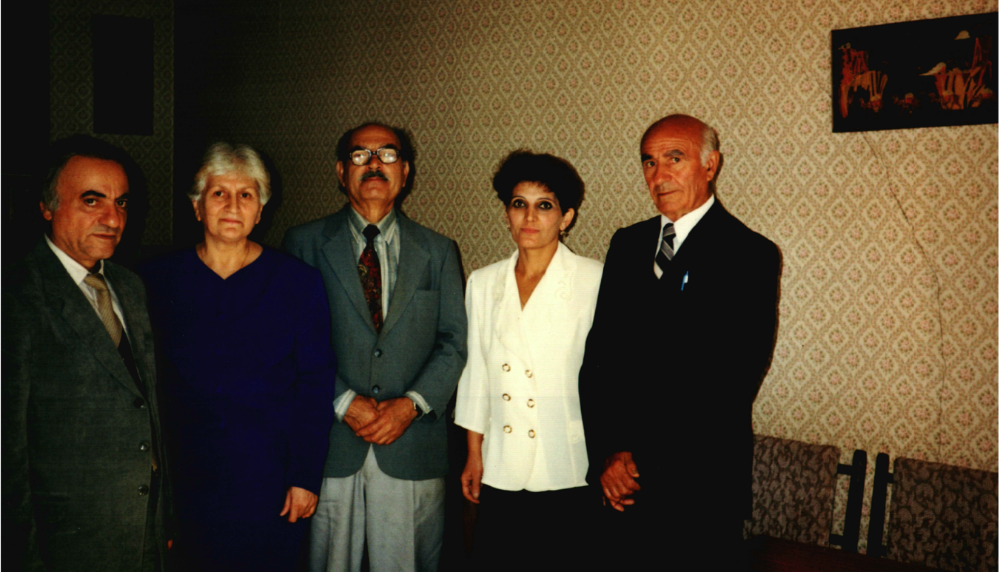
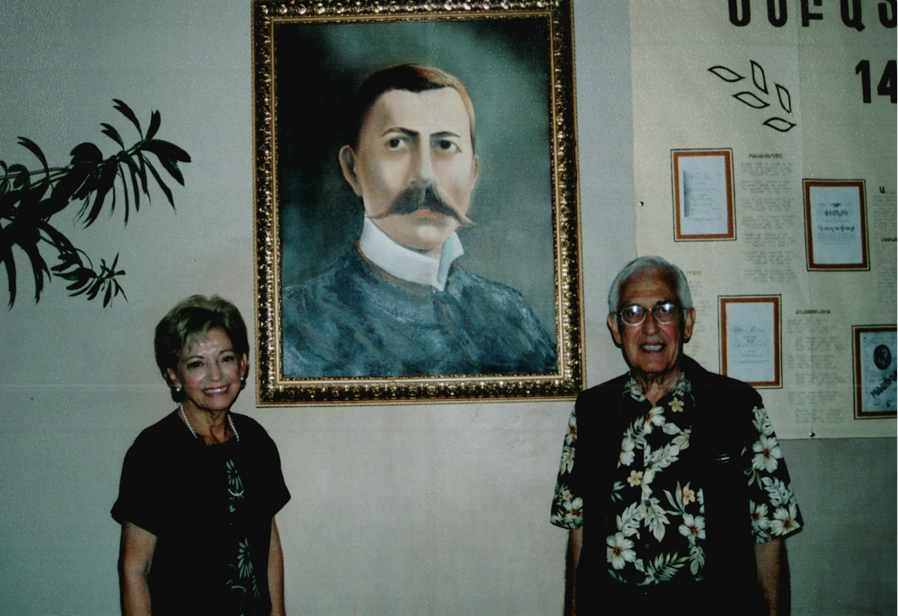

Սմբատ Բիւրատ
Սմբատ Բիւրատ (Տէր Ղազարենց) ծնած է 1862, Մարտ 3ին, Զեյթունի Պօզ-Պայիր թաղը. 9 տարեկանին Երուսաղէմի ժառանգաւորաց վարժարանը մտած՝ ուր գիշերօթիկ աշակերտելով, 1880ին շրջանաւարտ ելած Մուրատեան Մելիքսեթեան. վարդապետի տեսչութեան օրով:
Հայրենիք վերադարձած և 1880-82 Մարաշի Կիլիկեան Հայրենասիրաց Ընկերակցութեան Կեդրոնական Վարժարանի մէջ պաշտօնավարած, նախ օգնական՝ ապա Տնօրէն. 82-84ի վերջը Զեյթունի Միացեալ Կեդրոնական վարժարանը դասախօսած: 1885ին Սիս մասնաւոր վարժարան մը բացաւ զոր 6 ամիս կրցաւ շարունակել կլիմային անյարմարութեան պատճառաւ: Նոյն տարին ամառը Պոլիս կուգայ և կը ծանօթանայ ժամանակին բոլոր գրական դէմքերուն: Տէմիրճիպաշեան, Պէրպէրեան, Չերազ, Թերզեան, Լուսինեան Սրբազան ևայլն: Իր առաջին գրուածքը «Մեռեալները» քերթուածը կ᾿երևի «Երկրագունտ»ի 1885, Օգոստոսի թիւին մէջ:
1880ին, երբ Կիլիկիոյ Մկրտիչ Քէֆսիզեան Կաթողիկոս Պոլիս կ᾿երթայ՝ Սսո Մայր Աթոռը Պոլսոյ Պատրիարքի իրաւասութենէն զատելու , Բիւրատ Մարաշի մէջ կը յաջողի հիմնել «Կիլիկիոյ Պահապան» անուն ընկերութիւն մը որով իսկոյն յարաբերութեան մէջ կը մտնէ Կիլիկիոյ բոլոր թեմերուն հետ, այդ առիթով պատրաստելով Կիլիկիոյ հայ բնակչութեան լիակատար մարդահամարը:
Երբ Պատրիարքարանը ոտնձգութիւն մը նկատելով Կաթողիկոսին անջատողական ընթացքը, փորձեր կ᾿ընէ սեղմելու նոյն Աթոռին իրաւասութիւնները՝ զայն հասարակ վիճակի մը վերածելու, Քէֆսիզեան կը յաջողի նոյն ատենի Դատական նախարար Ճէվտէթ Բաշայի միջոցաւ «պէրաթ» մը ձեռք ձգել Համիտէն և դառնալ Սիս, մինչ միւս կողմէ Բիւրատ բուռն յօդուածներ կը հրապարակէր «Մասիս»ի մէջ: «Սմբատ Բիւրտաղլենց» ստորագրութեամբ, ի պաշտպանութիւն լոկ Սսոյ Աթոռին, թէև ինք ցվերջ հակառակորդ մնաց Կաթողիկոսին՝ անոր թիւր քաղաքականութեան համար:
1885ին կ᾿ամուսնանայ Խասգիւղի Գալֆայեան Որբանոցէն վարժուհիի մը հետ (Եւդոքսիա Շիշմանեան), որ 5 տարի յետոյ իր յեղափոխական գործակցութեամբ ամուսինին հետ պիտի բանտարկուէր և պիտի զրկուէր աչքերուն լոյսէն. (Տե՛ս «Բանտէ Բանտ»:
1885 Սեպտեմբերին կը մեկնին Կիւմիւլճինէ՝ վարժարանին տնօրէնութեան պաշտօնով, որուն ջերմոտ կլիմայէն հիւանդացած՝ 6 ամիս յետոյ կը վերադառնան Պոլիս, ուրկէ կ᾿անցնին Զեյթուն՝ Միացեալի կողմէն տնօրէն կարգուելով տեղւոյն դպրոցներուն:
1887ին տեղի կ᾿ունենայ Զեյթունի հրդեհը այրելով 950 տուն, եկեղեցիին վարժարանը: Բիւրատ կ᾿ստիպուի մեկնիլ Պոլիս ընտանեօք, ուրկէ քանի մը ամիս վերջ կ᾿անցնի Սամսոն, միշտ տնօրէնի պաշտօնով, ուր տարի մը պաշտօնավարելէ վերջ՝ «աղայական» պայքարի մը հետեւանքով, կ᾿ստիպուի Լեզուագիտական անկախ վարժարան մը հիմնել հոն, ժողովուրդին խնդրանքով, զոր կանգուն կը պահե 2 տարի:
1890ին Գում Գաբուի ցոյցը տեղի կ᾿ունենայ , և Բիւրատ կը պարտաւորուի փակել վարժաևանը ու իբր Հնչակեան ներկայացուցիչ ՝ ընտանեօք կ᾿անցնի Կիլիկիա, Ճամբան անվերջ իր կուսակցութեան բրօբականտն ընելով՝ Մարզուան, Ամասիա, Թօքաթ, Չիֆլիք, Եէնի Խան և Սվազ. ուր հանդիպելով ընկեր Շմաւոնի, 5 օր ալ հոն կը մնայ առաքելութեամբ, ու կը մեկնի Կիւրինի ճամբով Զեյթուն։ Սակայն , 10 ժամ հեռու՝ Եարբուզ գիւղին մէջ կը ձերբակալուի ընտանեօք և ուղղակի Մարաշ կը փոխադրուի, ուրկէ Հալէպ՝ մահուան դատապարտութեամբ…
Հինգ տարիներ զնտանները մնալէ վերջ, 1895ին, ընդհ. ներումին, ի՛նք ալ ազատ կ᾿արձակուի: Իրեն արգիլուած ըլլալով ծննդավայրը դառնալ, կ᾿ստիպուի Երուսաղէմ երթալ և անկէ՝ Պոլիս, ուր կը մնայ մէկ տարի,
Գատըգիւղ Արամեան վարժարանի իբր այցելու ուսուցիչ, մինչև որ կը պայթի 96ի Դէպքը:
Կը փնտռուի, և իսկոյն կը յաջողի կծիկը դնել ընտանեօք Եգիպտոս: Հոդ կ᾿սկսի իր կեանքին նոր շրջանը: Կրթական- գրական և հասարակական:
Գահիրէ կը հիմնէ «Կեդրոնական Կրթական Գահիրէի» անուն վարժարան
մը, որ կը վարէ 4 տարի, միաժամանակ հրատարակելով ՓԻՒՆԻԿ կիսամսեայ պարբերականը, յետոյ ՆՈՐ ՕՐ եռօրեան՝ մեկ տարի:
Կուսակցական վէճերէ զզուած՝ կը մտադրէ քաշուիլ Կիպրոս, Թիֆլիսի «Հրատարակչական »ին հետ համաձայնած ըլլալով պարբերաբար ղրկել իր անտիպ ձեռագիրները:
Կ᾿անցնի Բօր- Սայիտ ուր քարանթինայի պատճառով ամիս մը կ᾿ստիպուի մնալ. նոյն միջոցին է, որ «Հրատարակչական» ին խափանման գոյժը կ᾿առնէ: Աղեքսանդրիայէն բարեկամներ կը հրաւիրեն զինք:
Անցնելով կրկին Աղեքսանդրիա, կը վերսկսի իր նոր կեանքին: Քանի մը ամիս աղցաւոր վիճակէ մը անցնելէ յետոյ, շնորհիւ Զօրավար Կոստանդին Կամսարականի նիւթական օժանդակութեան, կը վերսկսի հրատարակութեանը «ՓԻՒՆԻԿ» շաբաթաթերթին որ կը շարունակէ 4 տարի և որ պայքարի թերթ մը կ᾿ընէ հարուածելով որջացած կամայականութիւններ մինջև որ կ᾿աջողի սահմանադրական առաջին ընտրութիւնը կատարել տալ Թաղական Խորհրդին:
1904ին կը կոչուի Աղեքսանդրիոյ ազգային վարժարանի տնօրէնութեան որ կը վարէ 2 տարի, միաժամանակ Աղեքսանդրիոյ Խառն Դատարանի մասնագետի պաշտօնին: Այդ միջոցին Իտալիա կը ճամբորդէ իր երկու զաւակները Վենետիկոյ Մուրատ- Ռաֆայէլեան վարժարանը դնելու և այդ առթիւ Իտալիոյ կարեւոր քաղաքները կ᾿այցելէ:
Կուսակցական աղտոտ պայքարի մը զոհ, Բիւրատ կը հրաժարեցուի: Ա՛յս պայքարին է որ բոլոր կուսակցականները կը համերաշխին, և ուսուցիչներէն հանրագրութիւն մը կը պատրաստուի բաց ի երկու օտար ուսուցչուհիներէ, Օրիորդ Պալէսթրաէ և Օրիորդ Շարլօթէ: 1907ին կ᾿անցնի Ռումանիա, ուր կը մնայ 10 ամիս: Հոն ֆրանս. բանաստեղծութեամբ մը կը ծանօթանայ Էլիզապէթ Թագուհիին ՝ (Գառմէն Սիլվա) որմէ գնահատական գիր ալ կ᾿ստանայ:
Գոնսթանձայի մէջ վատ մատնութեան մը զոհ, կ᾿ստիպուի հեռանալ Ռումանիյաէ՝ շղթայակապ Պոլիս ղրկուելու սպառնալիքին տակ, համիտաբարոյ ռօման ոստիկանապետ Չիմ պրուի օրով: Կը վերադառնայ Եգիպտոս՝ երբ քիչ վերջ, 1908ին, Սահմանադրութիւնը կը հռչակուի:
Բիւրատ Պոլիս կ᾿երթայ ընտանեօք, կը պաշտօնավարէ իբր խմբագիր «Մանզումէի էֆեքեար»ի, թերթօնելով «Բանտէ Բանտ» վէպը: Հրատարակած է նաև «Փիւնիկը» 5 թիւ և «Գաղափար» (օրաթերթ) 42թիւ:
Անդրանիկ զաւակին՝ Վաղինակի հետ հիմնած է հրատարակչական տուն մը «Ժամանակակից Մատենաշար» անունով, որ ցարդ լոյս ընծայած է 56 երկեր:
1908ին Զեյթուն- Մարաշի Ազգային Երեսփոխան ընտրուեցաւ 10 տարուան համար:
1896էն ի վեր դադրած էր որևէ յեղաբոխական կուսակցութեան մը պատկանելէ և կ᾿անդամակցէր Պոլսոյ Ազգային Երեսփոխան Ժողովի Ազատական կոսակցութեան:
Գրական ծածկանունները.- Հայկ Լեւոն, Ապտակ, Թաթ, Մտրակ, Խայթոց, Լեռնորդի ևայլն:
1910ին՝ 23 ամեայ նժդեհութենէ մը ետք հայրենաբաղձութեանը յագուրդ տուած է, անցնելով Զեյթուն բանտածին տղուն՝ Հայկ Լեւոնի հետ. Երեք ու կէս ամիս Կիլիկիոյ կարեւոր կեդրոններն ալ այցելած է, ուսումնասիրութեանց համար և վերադարձին՝ հանդիպած է Յունաստան, Աթէնքի հնութիւնները այցելելով:
Գահիրէի մէ՛ջ է, որ ճանչցած է Տիգրան Երկաթը, որուն մօր և եղբօր Մարտիրոս Պիլէզիկճիի հետ մտերմանալով ՝ յաջողած է ձեռք ձգել կենսագրական գրութիւններու ահագին շարք մը, որ ի մօտոյ մտադիր է իր որդին՝ Հայկ, հրատարակութեան տալ (եթէ մեկենաս մը գտնուի) հայութեան ճանչցնելու այդ մեծանուն ու մեծոգի երիտասարդը:
Այս առթիւ յիշենք թէ՝ յաւէրժացնելու համար անոր յիշատակը, թունդ հնչակեան Շաւարշ Հովիւեանի, Տօքթ. Տ. Էնֆիէյճեանի. Օննիկ Թաշճեանի, Բարսեղ Օհանեանի Էօժէն Բաբազեանի, և մէկ քանի երիտասարդներու ընկերակցութեամբ 1902ին հիմնած է ՏԻԳՐԱՆ ԵՐԿԱԹ ՄԻՈՒԹԻՒՆԸ՝ Լսարան ընթերցատունը:
Բիւրատ, 1915 Ապրիլ 24ին Պոլսէն տարագրուեցաւ 284 մտաւորականներու հետ Այաշ, ուր նահատակուեցաւ իր ընկերներուն հետ: Բիւրատի վերջին խօսքն եղաւ. «Զաւակնե՛րս, զիս մի՛ խորհիք, ձեռագիրներս փրկեցէ՛ք…»:
Հրատարակուածներէն զատ կը թողու բազմահատոր երկեր: «Լեռնականի մը Յուշատետրը», «Եգիպտահայ Դէմքեր», «Տիտղոսաւոր Մակաբոյծները», և Բանաստեղծութիւններու երկու հատոր:
ՀԱՅԿ ԲԻՒՐԱՏ (Սմբատ Բիւրատի որդին) գրված 1937 թվին
Վաղինակ Բիւրատը
Անդրանիկ որդին Սմբատ Բիւրատի՝ Վաղինակ Բիւրատը, ծնվել է 1886թվի օգոստոսի 10-ին Զեյթունում։(Առաջին Բիւրատ Ծնված)
Կրթությունը ստացել է վաղ հասակում տանը և հոր տնօրինությամբ տարբեր դպրոցներում, հետո Վենետիկի Մխիթարյան վարժարանում։
Իմացել է շատ լեզուներ –Իտալերեն, լատիներեն, ֆրանսերեն, թուրքերեն և արաբերեն բարձր մակարդակի
Սովորել է Եվրոպայում ժամանակակից տպագրություն (Offset Printing) և Պոլսում 1909 թվին բացել է «Ժամանակակից Մատենաշար» տպագրատունը։
Ամուսնացել է առաջին անգամ 1910-ին Արաքսի Զարդարյանի հետ։ Ամուսնության քավորը Գրիգոր Զոհրապն էր։
Ունենում է 2 աղջիկ՝ Սիրարբի (1911թ․) և Անաիս (1913թ․), որոնք ամբողջ կյանքն ապրել են Պոլսում։ Մինչ ամուսնանալը եղել են քեռու խնամքի տակ ։ 1967 թվին Անաիսն այցելում է Հայաստան և հանդիպում հորը՝ Վաղինակին և իր ընտանիքին։
1912 ուղևորովում է Ամերիկա 6000 գրքով, եղել է Տիտանիկի վրա և փրկվել։
Կոտորածի ժամանակ մի կերպ փրկվում է մի քանի անգամ անխուսափելի մահից։
1925 թվից թողնում է Պոլիսը հավերժ, ապրում՝ Լիբանանում և Սիրիայում։
Առաջին կնոջ մահվանից շատ տարիներ հետո Վաղինակը երկրորդ անգամ ամուսնանում է 1933 թվին այրի Բերսաբե Միդինյանի հետ։
1934թվի սեպտեմբերի 24-ին ծնվում է նրանց միակ որդին, որին ի հիշատակ իր հոր, Վաղինակն անվանում է Սմբատ։
1909-1937 թվերին Վաղինակ Բիւրատը հրատարակում է Սմբատ Բիւրատի բոլոր գործերը: Վաղինակը չդիմանալով սուղ պայմաններին փակում է տպագրատունը և տեղափոխում է հաստոցները տուն, ուր էլ նա հրատարակում է իր վերջին գործը՝ Ավետիք Իսահակյանի «Աբու Լալա Մահարի» պոեմը։ Սիրիայի կառավարությունը 1939թ․ մայիսի 6-ին տոնում է արաբ մեծ կույր բանաստեղծի 1000-ամյակը, որին ներկա են լինում Վաղինակ և Սմբատ Բյուրատները, որպես Սիրիայի նախագահի պատվավոր հյուր։ Վաղինակի ստեղծած գիրքը ոսկե տուփի մեջ դրված է որպես հիմնաքար մեծ բանաստեղծի դամբարանի համար։
1946 թվից տեղափոխվում է Սովետական Հայաստան, ուղարկվում է Գառնի
1947 թվից ապրում է Շահումյանի շրջանում.
Վաղինակ երազում էր Հայրենիքում հրատարակել Սմբատ Բիւրատի որևէ գործ, բայց դա իրեն չի հաջողվում: Միակ բանը, որ Վաղինակը կարողացավ անել, այդ 1965 թվականին իր հոր կյանքի կարճ պատմությունը հրատարակելն էր օրաթերթում.
Վաղինակ Բիւրատ ապրեց մինչև խոր ծերություն: 1965 թվի նոր տարվա օրերին, Վաղինակը փողոցում սայթաքում է և կոնքը կոտրում: 80 տարեկան Վաղինակի համար դժվար էր անկողնում գամված մնալը, և նա այդ ժամանակը օգտագործեց իր թոռանը՝ Հայկին կրթելու և իր զբաղմունքի ընկերը դարձնելու համար։ Նա 5-ամյա Հայկին թղթախաղեր և նարդի խաղալ սովորեցրեց, իր հետ զբաղվելու համար։ Վաղինակը նաև Հայկին թվաբանություն և հայոց լեզու սովորեցրեց, իսկ հետագա տարիներին՝ հայ գրականություն։ Նա Հայկին սովորեցրեց անսահմանորեն սիրել հայոց լեզուն։ Իսկ Հայկը խնամում էր իր մեծ հորը, սիրում և փայփայում նրան։ Հայկի համար չկար ավելի սիրելի բան, քան լսել իր մեծ հոր կյանքի պատմությունները, նաև հայկական և այլ երկրների պատմությունները, որոնք Վաղինակը պատմում էր թոռներին։ Վաղինակի սիրած ձևը մեկի մահը նկարագրելը. «փֆֆ կ՚ընէ կը մեռնի» ասելն էր։ Այդպես էլ Վաղինակը հանգիստ «փֆֆ ըրաւ» և մահացավ 1972 թվականի հունվարի 6-ին։
Վաղինակը թաղվում է Նոր Խարբերդ ավանի գերեզմանում, իր խնդրանքով իր շատ սիրած վաղամեռիկ խնամու՝ Սմբատ Խաչատրյանի մոտ։
1976 թվի հունվարին մահանում է Բերսաբեն և նույնպես թաղվում Նոր Խարբերդում։
Վաղինակի միակ երազն էր Հայաստանում տեսնել իր հոր՝ Սմբատ Բիւրատի տպագրված գործերից գոնե մեկը. բայց նա մահացավ իր երազը անկատար մնացած:
Վաղինակ Բիւրատը մի մարդ էր, որ միշտ տեսնում էր անձի միայն լավը, որի պատճառով էլ շատ կորուստներ է ունեցել։
Բայց դա չի խանգարել նրան կյանքը միշտ մակերեսային ընդունել և երևի դրա պատճառով էլ նա փրկվել է բազում անգամ 100% մահից։
Հայկ Լևոն Բիւրատ
Սմբատ Բիւրատի երկրորդ զավակը ծնվում է 1890 թվի սեպտեմբեր ամսին Մարաշի բանտում։ Սմբատ Բիւրատն անվանում է նրան Հայկ-Լևոն, հայոց առաջին և վերջին թագավորների անունով։
Կրթությունը ստացել է վաղ հասակում տանը և հոր տնօրինությամբ տարբեր դպրոցներում, հետո Վենետիկի Մխիթարյան վարժարանում։
Իմացել է շատ լեզուներ –ֆրանսերեն, թուրքերեն և արաբերեն բարձր մակարդակի
Սովորել է ժամանակակից տպագրություն (Offset Printing) Պոլսում եղբորից՝ Վաղինակից։
1925 թվից թողնում է Պոլիսը հավերժ,և մոր հետ երկրորդ անգամ տեղափոխվում է Եգիպտոս ։
1934 թվից եղբորից իրավունք է ստանում բացել «Ժամանակակից Մատենաշար»-ի Եգիպտոսի ճյուղը։ Նա գործում է տպագրատունը 1935-1940։ Նա հրատարակում է «Ժամանակակից Մատենաշար»-ի 57-71 թիվ գրքերը
Հայկի կինը եղել է սիրողական դերասանուհի և մասնակցել է գաղութային բազմաթիվ թատերական բեմադրությունների։
1948 թվին Հայկ-Լևոնը ընտանիքով ներգաղթից Հայաստան
1948 թվականի հուլիսի 31-ին Նյու Յորքի նավահանգստից դուրս եկավ սովետական «Պոբեդա» զբոսաշրջային նավը և ուղղություն վերցրեց դեպի Օդեսա: «Զբոսաշրջային» բառն այս անգամ պայմանականորեն պիտի օգտագործենք, քանի որ նավի ուղևորների մեծ մասը հայեր էին, ովքեր կայացրել էին իրենց կյանքի կարևորագույն որոշումներից մեկը` հայրենադարձվել ու մշտական բնակություն հաստատել Հայաստանում: Նրանց հրաժեշտ տալու էին եկել հարազատներն ու ծանոթները, որոնցից շատերը նույնպես պատրաստվում էին բռնել վերադարձի ուղին: Նույն տեսարանը կրկնվեց նաև օգոստոսի 22-ին, երբ շոգենավը կանգ առավ Ալեքսանդրիայում: Տախտակամած բարձրացան ու իրենց հայրենակիցներին միացան բազմաթիվ եգիպտահայեր: Այդ օրը նավապետը ռադիոհաղորդագրությամբ տեղեկացրեց, որ «Պոբեդայի» վրա 2020 հայրենադարձ հայեր են գտնվում: Եվ ոչ ոք չէր էլ կարող կռահել, թե ինչով պիտի ավարտվեր իրենց ուրախ նավարկությունը:
Մեկնարկից ուղիղ մեկ ամիս անց` օգոստոսի 31-ին նավը խարիսխ գցեց Բաթումում: Հայերն այստեղ ափ իջան` Վրաստանի տարածքով Երևան մեկնելու համար: Նավապետի հաջորդ հաղորդագրությունը տեղեկացնում էր այն մասին, որ սեպտեմբերի 2-ին «Պոբեդան» կհասնի վերջին նավահանգիստը` Օդեսա: Բոլորն անհամբեր սպասում էին երկարատև ուղևորության բարեհաջող ավարտին: Բայց կատարվեց անսպասելին:
Հաջորդ օրը առավոտյան, երբ Սևծովյան նավագնացության ծառայությունից փորձ արվեց տեղեկություն ստանալ նավարկության ընթացքի մասին, նավը կապի դուրս չեկավ: Փորձերը կրկնվեցին: Ոչ մի արձագանք: Այդ ժամանակ անհետացած «Պոբեդան» որոնելու համար օդ բարձրացան մի քանի ինքնաթիռներ: Սեպտեմբերի 2-ի երեկոյան Յալթայից 70 մղոն հարավ-արևելք օդաչուներից մեկը նկատեց նավը` կրակների մեջ, պատված ծխի թանձր շերտով, իսկ նրա շուրջը լողում էին մարդկանցով լեցուն 5 նավակներ: Զբոսանավում հրդեհ էր բռնկվել: Առաջին ժամերի տեղեկությունները ողբերգական էին. զոհվել էին ուղևորներից 42-ը (հիմնականում` կանայք և երեխաներ), կային բազմաթիվ վիրավորներ: Զոհերի թվում էին չինացի նշանավոր մարշալ և պետական գործիչ Ֆեն Յուսյանը ու նրա դուստրը, ռուս դիվանագետների ընտանիքի անդամներ և այլ նշանավոր անձինք:
Պատահարի մասին անմիջապես հայտնեցին Սոչիում հանգստացող Իոսիֆ Ստալինին: Կատաղած առաջնորդը կարիք չուներ սպասելու լրացուցիչ բացատրությունների: Նրա համար ցանկացած վթար կամ աղետ դավադրություն էր, թշնամիների ձեռքի գործը: Իսկ այն փաստը, որ նավի վրա հազարավոր արտասահմանցի հայեր էին եղել, միանգամից վերածվեց հիվանդագին մտասևեռման. ուրիշ էլ ո՞վ կարող էր հրկիզել սովետական զբոսանավը, եթե ոչ հայերը: Այսքանը լիովին բավարար էր, որ նա հանձնարարական ուղարկեր Կրեմլ` ՍՄԿԿ Կենտկոմի Քաղբյուրոյի անդամ Գեորգի Մալենկովին և վերջինից պահանջեր անհապաղ բացահայտել հայ ահաբեկիչներին ու լրտեսներին:
Հայկ-Լևոնին աքսորում են Սիբիր անգլիական լրտեսի մեղադրանքով։ 1953 թվին իրեն Սիբիրից տուն են ուղարկում, որովհետև նա բոլորովին հյուծված էր։
Նա տեսնվում է եղբոր հետ և մի քանի շաբաթից մահանում է Հայաստանում։ Գիտենք, որ նա ամուսնացած է եղել և ունեցել է մի աղջիկ, բայց ոչ մի տեղեկություն չկա նրանց մասին։
Բյուրատ Մշակույթային Կազմակերպությունը (ԲՄԿ) և Վահագ Բյուրատ հայեցակարգ
1999 թվի ամռանը ստեղծվեց Բյուրատ Մշակութային Կազմակերպությունը (ԲՄԿ) Հայկ և Հասմիկ Բյուրատների կողմից և ստացավ ԱՄՆ-ի Բարեգործական Կազմակերպության իրավունք 2000 թվին։
Այն ստեղծվել է իրականություն դարձնելու Վաղինակ Բյուրատի երազանքը, որն է տեսնել իր հոր՝ Սմբատ Բիւրատի որևէ գիրք տպված Հայաստանում։ Վաղինակի այդ երազանքը այդպես էլ իրականություն չդարձավ իր կենդանության օրոք։
Ստեղծմանը առաջին հոգևոր խրախուսողը եղել է Վաղինակի առաջին աշակերտը՝ Շահեն Խաչատրյանը, որը կազմակերպեց ԲՄԿ-ի 4 գրքերի տպմանը Հայաստանում 1999-2003 թվերին

1999 թվին մեր կազմակերպության կողմից հրատարակվեց Վաղինակ Բիւրատի «Իմ Կեանքի Յուշերից»-ը, իսկ 2002 թվին հրատարակուեց՝ «Ընտիր Էջեր»-ը։

2001 թվականին մեր կազմակերպությունը հրատարակեց Հայաստանում Սմբատ Բիւրատի «Երկեր» հատորը, իրականացնելով Վաղինակ Բիւրատի երազանքը։ Այս գրքի մեջ կան բանաստեղծություններ, վիպակներ՝ «Վերջին Բերդը», «Արիւնի Ձորը», «Զէյթունցի Վարդապետը», «Աւարայրի Արծիւը» եւ այլն։
2002 թվականին հրատարակվեց «Սմբատ Բիւրատի վիպաշխարհը»։ Այս գիրքը ընդգրկում է վեպերի վերապատումներ, քննություններ և բնագրեր։

Կազմակերպությունը չկարողացավ պահպանել «Charitable foundation» կացությունը 2004 թվից, որովհետև չկարողացավ ստանալ որևէ օգնություն համայնքի կողմից։
Կազմակերպության հիմնական նպատակն է պահպանել բոլոր ձեռագրերը և տպված գրքերը։
1909 – 1937 թվերին Վաղինակ Բիւրատը հրատարակել է Սմբատ Բիւրատի բոլոր գործերը։ Մեծ մասը արել է նույնը Հայկ Բիւրատը 1934 – 1939 թվերին Եգիպտոսում։
Այս գրքերը շատ դժվար է գտնել, իսկ գտնված օրինակները վատ վիճակում են։
2020թ․-ի սկզբից կապ հաստատվեց Հայաստանի Հիմնարար Գիտական գրադարանի հետ: Պարզվեց 16 գրքեր գտնվում են Հայաստանի Հիմնարար Գիտական գրադարանում։ Ես կապվեցի իրենց հետ և պատասխան ստացա պր․ Տիգրան Զարգարյանից։ Գտնվեց մեկ գիրք, որը հնարավոր է կարդալ առցանց։
Պր․ Տիգրան Զարգարյանի հետ, իրար օգնելով, 90% իր խմբի օգնությամբ, այսօր կարող ես կարդալ բոլոր գրքերը առցանց։ Բացի կա դեռ մի գրքի, որ չենք գտել։
Բիւրատ Ընտանիքը և հատկապես ես, մինչև կյանքիս վերջ երախտապարտ ենք պր․ Տիգրան Զարգարյանին և իր խմբին աշխատանքի համար, որ հնարավորություն ընդձեռնեց մեզ կարդալու Սմբատ Բիւրատին նորից:
Իմ հուզմունքը անչափ էր, երբ գրքերի մեծ մասի վրա տեսնում էի իմ պապ՝ Վաղինակի գրվածքները:
2020 թվի սեպտեմբերին եգիպտահայ Ժիրայր Շուշանեան թարգմանեց և տպեց «Որդեսպան Ծնողք» վեպի արաբերեն թարգմանությունը։

2021 թվի նոյեմբերին, Հայկ և Հասմիկ Բյուրատները հրատարակեցին Սմբատ Բիւրատի առաջին անգլերեն գիրքը, որը ոչ մի հաջողություն չունեցավ։ Ահա ինչ գրեց ԳԱԹ-ը։
«Ս.թ. նոյեմբերին ԱՄՆ-ում, Byurat Cultural Foundation-ի նախաձեռնությամբ լույս է տեսել գրող, պատմաբան, Հայոց ցեղասպանության զոհ Սմբատ Բյուրատի (Սմբատ Տեր-Ղազարյան, 1862-1915) ստեղծագործությունների անգլերեն թարգմանությունների առաջին հատորը։ Սա Բյուրատի գրական ժառանգության առաջին օտարալեզու հրատարակությունն է։
Սմբատ Բյուրատի գրական ժառանգությունը կարելի է ամփոփել ավելի քան քառասուն հատորներում։ Բյուրատը նաև բազմաթիվ թարգմանություններ է կատարել ֆրանսերենից, իտալերենից, լատիներենից, թուրքերենից, արաբերենից և այլն։»
2021-ի առաջին ամիսներին ես՝ Հայկ Բյուրատս, նորից սկսեցի ուսումնասիրել Ս․ Բիւրատի գործերը, սկսելով ամսագրերից, որ նա հրատարակել է։ Հավաքեցի «Փիւնիկ» և ուրիշ ամսագրերում իր տպած բոլոր բանաստեղծությունները և կազմեցի «PDF» դրանից։ Այն ես փոխանցեցի ԳԱԹ-ի Հասմիկ Հախվերդյանին:
Սմբատ Բիւրատի 160 ամյակին, այս բոլոր բանաստեղծությունները և պոեմները մի գրքով լույս տեսավ, որի մեջ է նաև որոշ նոր չտպված գործեր:

“Երևանի Գրականության եւ արվեստի թանգարանում 2022թ․ մարտի 4-ին, նվիրական և հուզիչ ձեռնարկ էր կազմակերպված: Տեղի ունեցավ արևմտահայ եղեռնազոհ գրող, պատմաբան, հասարակական գործիչ Սմբատ Բիւրատի «Բանաստեղծություններ եւ պոեմներ» հատորին նվիրված շնորհանդեսը: Այսպիսով, Գրականության եւ արվեստի թանգարանը եւ «Բիւրատ մշակութային հիմնարկ»ը մեկնարկեցին Սմբատ Բիւրատի 160-ամյակին նվիրված հոբելյանական միջոցառումները։
Սմբատ Բիւրատի կենսագրության և գրական գործունեության վերոնշյալ մանրամասները և ուրիշ հետաքրքրական դրվագներ էլ ներկայացվեցին Երևանի միջոցառման ընթացքում: Ձեռնարկը ազդարարվեց «Սմբատ Բիւրատ-160» տեսաժապավենի ցուցադրմամբ, այնուհետև ելույթ ունեցան Գրականության և արվեստի թանգարանի տնօրեն հայագետ Վահագն Սարգսյանը, նույն թանգարանի նախկին տնօրէն, գրականագէտ Կարօ Վարդանեան, հետազօտող, հայագէտ Միհրան Մինասեան, գրադարանագետ Տիգրան Զարգարյան, Բիւրատի նորահրատարակած գրքի կազմողը, Գրականության և արվեստի թանգարանի աշխատակից Հասմիկ Հախվերդյանը և ուրիշներ: Շնորհանդես-ձեռնարկի ընթացքին տեսաուղերձով Երևան միացավ Սմբատ Բիւրատի ամերիկաբնակ թոռնորդին՝ Հայկ Բյուրատը, որի նախաձեռնությամբ և նյութական աջակցությամբ էլ հրատարակվել է «Բանաստեղծություններ եւ պոեմներ» ժողովածուն։ Իսկ գեղարվեստական մասի մեջ «Ծագէ նոր օր» խորագրով գեղարվեստական միջոցառմամբ ելույթ ունեցան Երևանի Զեյթուն շրջանի Սմբատ Բիւրատի անունը կրող դպրոցի սաները։ Այս դպրոցը Սմբատ Բիւրատի անունով է կոչվել 1997 թվականին: Մինչ այդ, նրա անունը թե՛ Խորհրդային Հայաստանի մեջ և թե՛ նորանկախ հայրենիքի մեջ գրեթե մոռացության էր մատնված:”
2021 թվի ամռանից ես աշխատել եմ «Լեռնականի մը Յուշատետրը» գրքի վերածելու գործի վրա։ Ցավոք սրտի Հայաստանի Գրականության և արվեստի թանգարանում գտնվող 367 էջը միայն հինգ մասերից առաջին երկուսն են։
Առաջին մասը 1899թվին տպվել է Ս․ Բիւրատի «Փիւնիկ» ամսագրում, բայց վերափոխվել է մի քանի անգամ։
Իր մահից հետո Թէոդիկը 1921-ին սկսում է տպել իր Ամէնուն տարեցոյցը 1921-ի մեջ (73-74 էջ): Նորից անհայտ պատճառներով այն չի շարունակել տպագրությունը։
Նորից միայն առաջին մասը տպագրվել է «Բազմավեպ»-ում 1935-1938 թվերին։ Նորից կազմեցի «PDF» դրանից և նորից այն ես փոխանցեցի ԳԱԹ-ի Հասմիկ Հախվերդյանին: Ես ագահորեն կարդացի այս Սմբատ Բիւրատի մանկության մասը:Կարդալ և Սմբատ Բիւրատի մանկական աչքերով տեսնել, լսել, շոշափել Զեյթունի կյանքը անչափ սիրելի էր ինձ համար։

2023 թվի Նոյեմբերի 3-ին Գրականության և արվեստի թանգարանում կայացավ Սմբատ Բյուրատի «ԼԵՌՆԱԿԱՆԻՆ ՅՈՒՇԱՏԵՏՐԸ» հուշագրության շնորհանդեսը, որում ամփոփված են ութ մասից բաղկացած հուշագրության Ա, Բ և Գ (թերի) մասերը․ մնացած մասերը, ցավոք, չեն պահպանվել։ Գիրքը հրատարակվել է Վահագ Բյուրատի կողմից։
Միջոցառումը մեկնարկեց գրքի կազմող, ԳԱԹ մարքեթինգային ծրագրերի պատասխանատու Հասմիկ Հախվերդյանի խոսքով, ապա հուշագրությանը բովանդակային անդրադարձ կատարեց ԳԱԹ տնօրեն Վահագն Սարգսյանը։ Ելույթ ունեցան նաև գրքի պատասխանատու խմբագիր, ձեռագրագետ, ցեղասպանագետ Միհրան Մինասյանը, Հայաստանի պատմության թանգարանի ազգագրության բաժնի վարիչ Արտակ Ասատրյանը, արձակագիր Նելլի Շահնազարյանը։

Շնորհանդեսի ընթացքում Սմբատ Բյուրատի անվան համար 125 դպրոցի սաները ներկայացրին բեմականացված հատվածներ Բյուրատի կյանքի ու գործունեության վերաբերյալ։

2024 թվի Ապրիլ 24- ից Վահագ Բյուրատը ստեղծեց BYURAT.COM web site կայքը։ 21 տարվա մեջ մենք էլ շատ բան սովորեցինք մեր նախնիների համար և այժմ այն ճշտված է։
Ահա մի մարդու գնահատական, որը խրախուսում է մեզ ավելին անելու ․․․
« Շատ ճաշակով էջ եք ստեղծել, ահագին տեղեկատվություն կա ներսում, օգտակար թե՛ գրականագետներին, թե՛ ուսանողներին և աշակերտներին, և թե՛ պարզապես մարդկանց, ում հետաքրքիր է Բյուրատ ազգատոհմի պատմությունը և ճյուղերը:»
Այս բոլորը եղավ որովհետև ես՝ Հայկ Բյուրատս, տաս տարեկանում, մի անգամ կյանքումս լսեցի իմ պապու երազանքը ու աշխատեցի ողջ կյանքում այն իրականություն դարձնել։
Սա նաև եղավ, որովհետև Հասմիկ Բյուրատը իմ ամբողջ կյանքում հոգեպես և նյութապես ինձ օգնեց, որ իմ պապու երազանքը կատարվի։
Հավերժություն Սմբատ Բիւրատին։ Երազում եմ, որ մենք՝ իր հետնորդները արժանի լինենք իրեն։
Այսօր էլ իմ աչքի առաջ է իմ պապ Վաղինակը և հույս ունեմ, որ իր երազանքը իրականացրեցինք։
Սմբատ Բիւրատի Դպրոց
Սմբատ Բիւրատ ուսավանդել է և շատ անգամ տնօրենն է եղել կրթօջախների Զեյթունում, Մարաշում, Սամսոնում, Սիսում, Կահիրեում և Պոլսում։
1997-ին Երևանի Նոր Զեյթուն շրջանի 125 դպրոցը անվանվում է Սմբատ Բիւրատի անունով, անսալով Զեյթունի հայրենակցական միության և հատկամես միության նախագահի՝ Դանիել Գալբակյանի խնդրանքին:

Հենց կրթօջախը պետք է լիներ Սմբատ Բիւրատի անմահության և երկրպագության խորանը։ Ահա այս բառերն է, որ գրվել է Մավր Դանիելյանի կողմից, երբ նոր Զեյթունի 125 դպրոցը անվանվեց Սմբատ Բիւրատի անունով։
1998 թվականի «Վերջին Զանգ»-ից Հայկ և Հասմիկ Բյուրատները հովանավորել են այն դրամական մրցանակներով լավագույն տարվա ուսուցչին, աշակերտին և աշակերտուհուն։
2020 թվականից մայրս այցելեց դպրոց Դանիել Գալբակյանի հետ։
2002 թվին, Ստիվ Լազարյանը այցելեց դպրոց և նվիրեց Սմբատ Բիւրատի նկարը ծննդյան 140 ամյակի կապակցությամբ։

Նրա կազմակերպությունը օգնում էր այդ ժամանակ դպրոցին ոչ միայն դպրոցական պիտույքներով և կահույքով, այլ նաև շատ անգամ ուտեստով և հագուստով։ Ստիվ Լազարյանի օգնության շնորհիվ էլ Կ․ Գռիգօռիանի կազմակերպությունը հիմնավոր վերականգնեց դպրոցը 2007-2008 թվակամմերին։
Բայց 2008 թվականից հետո ես և կինս՝ Հասմիկը դադարեցրինք դպրոցին հովանավորելը դպրոցի անորեն տնորենի պատճառով։
2000 թվակամից մենք նորից համագործակցում ենք դպրոցի և նոր՝ այսօրվա տնորենի Լիլիթ Անտոնյանի հետ։
Պետք է հաճելիորեն խոստովանել որ աշակերտները և ուսուցչական կազմը շատ որակով է, սա իմ ասածը չէ, այլ մի խումբ դասախուների և թանգարանի գինաշխատողների։
Սմբատ Բիւրատի 160 ամյակի համար կազմակերպած երեկույթը հոյակապ էր։
Սմբատ Բիւրատի գործերը
1908 – 1937 թուերին Վաղինակ Բիւրատը հրատարակել է Սմբատ Բիւրատի բոլոր գործերը։ Նոյնը արել է Հայկ Բիւրատը 1933 – 1938 թուերին Եգիպտոսում։
Այս գրքերը շատ դժուար է գտնել եւ գտնուած օրինակները վատ վիճակում են։
Այժմ կազմակերպութիւնը ունի 7 գրքեր։ Շատ գրքեր այնքան հին են, որ չես կարող թուայնացնել։ Այդպիսի գրքերից մէկը մենք փորձեցինք տպել (Type) Հայաստանում։
Պատահմամբ գրքերի մեծ մասը գտնուեց մեր կողմից՝ Հայաստանի գլխաւոր գրադարանում։ Այժմ մեծ յոյս կայ, որ այս գրքերը կը պահպանուեն։ Գրքերի մեծ մասը պատկանել է առաջ մեր ընտանիքին, որը վկայւում է Վաղինակ Բիւրատի նշումներով գրքի վրայ։
Բացի «Ավետարան»-ից Զեյթունի բառբառով, մնացած բոլոր գրքերը հասանելի է կապի միջոցով
այստեղ
Ուրիշ տեղատվություններ
Ադանայի երգը/Ողբը1909թվականին Ադանայի կոտորածից հետո Սմբատ Բյուրատը անմիջապես գրում է իր «Ադանայի երգը» և առաջին անգամ այն հրատարակում է իր ամսագրերից մեկում և եթե չեմ սխալվում `«Գաղափարի »մեջ:
1911 թվականին բանաստեղծությունը լույս է տեսնում Հմայակ Արամեանցի «Հայուն երգարանը»գրքի մեջ /էջ287/: (տես կցված նկարը)
Այն փաստը որ բանաստեղծությունը տպվել է «Հայուն երգարանը»գրքի մեջ, վկայում է այն որ բանաստեղծությունը արդեն երգ է եղել այն ժամանակ-1911-ին։
1912 թվականին նորից տպվում է Յակոբ Թէրզեանի «Կիլիկիոյ Աղետը» գրքի մեջ /էջ851/:(տես կցված նկարը)
Ցավալիորեն, 1940 ական թվականներից ( Երբ Բիւրատները այլևս չունեին տպարան), երբ «Ադանայի ողբը» տպվել է, ոչ մի անգամ չի նշվել գրողի անունը Սփյուռքում, իսկ Հայաստանում Սմբատ Բիւրատը արգելված գրականություն էր: (տես կցված նկարը)
Հայ երգիչները սկսեցին երգել այս երգը ավելի ուշ- 1970-ական թվականներին: Սակայն այս երգը միշտ երգվել է սփյուռքում: Չնայած լինելով շատ տխուր երգ, այն միշտ երգվել է հավաքույթներում և նույնիսկ հարսանիքներում:
Ես առաջին անգամ լսել եմ երեք տարեկան հասակում իմ հորաքույր Արաքսիի կատարմամբ` 1963 թվականին: Երբ արդեն տասը տարեկան էի,պապս`Վաղինակը ինձ համար արտասանեց այս բանաստեղծությունը մի քանի անգամ և շատ հուզվելով իր հոր՝ Սմբատ Բիւրատի՝ անտեսված մարդու համար: Նա ինձ ցույց տվեց Հ.Մ.Պողոսյանի «Զեյթունի պատմությունը» գիրքը, որի 371 էջում ես առաջին անգամ տեսա բանաստեղծության երկու տունը միայն:
Շատ փնտրելուց հետո, Ամերիկայում առաջին անգամ ամբողջ բանաստեղծությունը գտա 1998 թվականին և այն կազմեց իմ հոդվածի մասը, որը ես 1999-2000 թվականներին տպագրեցի մի քանի ամսագրերում՝ հայտնելով համայնքին «Բիւրատ Մշակութային Կազմակերպության»ստեղծման մասին:
Ապրիլի 27, 2022 թվին շատ ճաշակով«Երաժշտական պատմություններ» -ի ժամանակ «Ադանայի ողբը» ցույց տրվեց ինձ առաջին անգամ:
Շնորհակալություն Հասմիկ Հախվերդյանին, Գրականության և արվեստի թանգարանին, բոլոր մասնակից երգիչուհիներին՝ Ագապի Ղազարյանին, Ֆլորա Մարտիրոսյանին, Զարուհի Բաբայանին, Նունե Եսայանին, Պոլսահայ Սիպիլին և մյուս կազմակերպիչներին, ամենագեղեցիկ հաղորդման համար:
Երաժշտական պատմություններ/ Ադանայի ողբը/ Adana
Երգը կատարվեց նաև ռուսահայ երգչուհի Ելվիրա Մարկարյանի կատարմամբ
https://www.youtube.com/watch?v=PFNkwAILxsQ&ab_channel=TsovitsTsov
Երաժշտական պատմություններ/ Ադանայի ողբը/ Adana
| Ադանայի ողբը (Տարբերակ 1) Կոտորածն անգութ, հայերը թող լան, Անապատ դարձավ շքեղ Ատանան: Կրակը, սուրը ու անխիղճ թալան, Ռուբենյաց տունը, ա՜խ, ըրավ վերան: Ալ մի’ տար լույսդ, պայծառ արեգակ, Լուսին, շուրջ կապե դուն սուգի մանյակ, Անցավ մեր երկրեն հարավի խորշակ, Չորցուց, թոռմեցուց ծառ-ծաղիկ համակ: Րոպե մը չանցավ ու հայոց խեղճեր, Ինկան սուրին տակ խուժանին ահեղ: Ժամեր ու դպրոց բոցի մեջ կորան, Բյուրավոր հայեր անխնա մեռան: Պարապ է ավա՜ղ, հարուստ Ատանան, Մոխիր է դարձեր ամբողջ Կիլիկյան, Միայն ապրեցավ Հաճընը սիրոյն, Ինչո՞ւ չի շարժիր ապառաժ Զեյթուն: Երեք օր գիշեր կրակը մեջեն, Թշնամվույն սուրը, գնդակը դրսեն, Ջնջեցին հայը երկրին երեսեն, Արյուն կը վազե մեր ջինջ գետերեն: Ալ բավ է որքան վատերուն լուծը Կրեցինք, թողունք մեր լացն ու կոծը, Օտարին տունը ալ չէ ապահով, Հայ հողի վրա մեռնինք մենք փառքով: |
Ադանայի ողբը (Տարբերակ 2) Կոտորածն անգութ, հայերը թող լան, Անապատ դարձաւ շքեղ Ատանան. Կրակն ու սուրը եւ անխիղճ թալան Ռուբինեանց տունը ա՜խ, ըրին վերան։ Րոպէ մը չանցաւ ՚ ու հայոց խեղճեր, Ինկան սուրին տակ խուժանին ահեղ, Ժամեր ու դպրոցք բոցի մէջ կորան, Բիւրաւոր հայեր անխնայ մեռան։ Պարապ էր աւա՜ղ, հարուստ Ատանան, Մոխիր էր դարձէր ամբողջ Կիլիկիան. Միայն ապրեցաւ Հաճընը սիրուն, Ինչու չի շարժիր ապառաժ Զէյթուն։ Ցերեկ ու գիշեր կրակը մէջէն, Թշնամուն սուրը, գնդակը դրսէն, Ջնջեցին հայը երկրին երեսէն, Արիւն կը վազէ մեր ջինջ գետերէն։ |
Սմբատ Բիւրատի «Բանաստեղծություններ և պոեմներ»գրքի մեջ առաջին անգամ «Ադանայի երգը»(էջ 160-161) տպվեց նրա մյուս բանաստեղծությունների հետ։
Նույնիսկ սիրելի պոլսահայ երգչուհի Սիբիլը հատկացրել է URL և բջջային հեռախոսով բացելուց հետո,այն տանում է «Ադանայի ողբին»որտեղ հնչում է այն Սիբիլի անուշ կատարմամբ:
https://www.youtube.com/watch?v=i7Zl4aYgNN8&ab_channel=sibilmusicofficial
YouTube Links.
Հրատարակվել է արմատներով զեյթունցի Սմբատ Բյուրատի ստեղծագործությունների ժողովածուն
Երաժշտական պատմություններ/ Ադանայի ողբը/ Adana
Smbat Byurat 4 Part Videos- Նարինե Թուխիկյանի 4 մասից Բյուրատների մասին ժապավենը
https://www.youtube.com/watch?v=Jy4H1fW7DXU&ab_channel=HaikByurat
https://www.youtube.com/watch?v=j3HoRysZNUI&t=14s&ab_channel=HaikByurat
https://www.youtube.com/watch?v=WPmas6OMbDw&ab_channel=HaikByurat
https://www.youtube.com/watch?v=3Vt3umny6VY&t=2s&ab_channel=HaikByurat
Smbat Vaghinak Byurat – Սմբատ Վաղինակի Բյուրատ
1934 թվականի Սեպտեմբերի 24-ի արշալույսին բախտավորվում եմ։ Աշխարհ է գալիս մի մանչ զավակ։ Անունը կնքում ենք մեծ հոր՝ Սմբատի անունով։ Երջանկությանս չափ չկար։
Այսպես է նկարագրում Վաղինակ Բյուրատը իր որդու ծնունդը։ Նա շատ երջանիկ էր, որ իր ազգանունը շարունակող կա վերջապես։
Երկար տարիներ ընտանիքը հաստատ չգիտեր Սմբատի ճիշտ ծննդյան օրը և երբ հարցնում էինք մորը, միշտ ասում էր, որ Արաբական տոնի օր էր։ 1996 ին, Հայաստան եկավ Վաղինակի ընկերը Լիբանանից։ Նա իր հետ բերել էր Վաղինակի ընտանեկան ավետարանը, որի վերջին էջերում Վաղինակը գրել էր-“Սեպտեմբերի 24-ի արշալույսին աստված պարգևեց ինձ մի որդի, որին կնքում ենք մեծ հոր՝ Սմբատի անունով “.
Սմբատն անհոգ մանկություն է ունենում մինչև երկրորդ համաշխարհային պատերազմի սկիզբը։ Հիմնականում այդ տարիներին նա կրթվում է տանը։Կյանքը գնալով դժվարանում է ընտանիքի համար Լիբանանում։ Բեյրութում գները սարսափելի էին, և ընտանիքը փորձում է տեղափոխվել քաղաքից դուրս։
Վաղինակն իր հետ վերցնելով 7 տարեկան Սմբատին, տեղափոխվում է Ռաքքա գյուղաքաղաքը Դեյր էլ Զորի մոտ։ Այստեղ Վաղինակը դասավանդում է միակ հայ դպրոցում, ուր և Սմբատը հաճախում է դպրոց։ Ծանր տարիներ էին և ընտանիքը հազիվ է կարողանում հայթայթել բավարար եկամուտ գոյությունը պահպանելու համար։ 1944-ին Ռաքքա է գալիս Բերսաբեն։
1945թ․ վերջին արաբներն ապստամբում են ֆրանսիացիների դեմ և մի նոր պատերազմ է սկսվում։ Վաղինակը 1945թ․ամռանը կնոջ և Սմբատի հետ տեղափոխվում է Հալեպ, իսկ սեպտեմբերից Վաղինակը դառնում է Հալեպի Արամյան դպրոցի պատասխանատու ուսուցիչ։
1946 թվի սկզբին Սմբատը քննություն է տալիս Վենետիկի Մխիթարյան միաբանության սան լինելու համար։ Բայց Վաղինակը որոշել էր, որ ամբողջ ընտանիքով Հայաստան պիտի ներգաղթեն։ 1946 թվի հուլիսի 4-ին ընտանիքը թողնում է Լիբանանը «Տրանսիլվանիա» նավով։
Բոլոր հայրենադարձ ընտանիքների պես, Բյուրատները նույնպես սկսում են իրենց դժվար կյանքը անօրենք ստալինյան Հայաստանում
Հուլիսի 16-ին ընտանիքը հասնում է Երևան, ուր 4 հոգանոց ընտանիքին մի սենյակ է տրամադրվում Արաբկիր շրջանում։
Ընտանիքին ոչ մի գործ չի տրվում և հետո ուղարկվում է Գառնի գյուղ, որտեղ էլ ընտանիքը մեկ տարի ապրում է շատ նեղ պայմաններում։
1947 թվականից հետո ընտանիքը տեղափոխվում է Երևանի Շահումյանի շրջանը, ուր Սմբատը հաճախում է այժմյան N։90 դպրոցը, իսկ Վաղինաը նշանակվում է դպրոցի գրադարանավար
Սմբատը շատ ուշիմ էր։ 1947թվի ամառվա արձակուրդներին ինքնուրույն սովորում է ռուսերեն։ Բայց իր սերը բնական առարկաներն էին և հատկապես քիմիան։
1952թ․Սմբատը գերազանցությամբ ավարտում է տասնամյա դպրոցը։ Իրեն հասնող ոսկե մեդալը տրվում է ուրիշին։
Գերազանց հանձնելով ընդունելության քննությունները, Սմբատն ընդունվում է Երևանի Պոլիտեխնիկ Ինստիտուտի էլեկտրոքիմիայի բաժինը։ 1957թ․Սմբատն ավարտում է Ինստիտուտն գերազանց գնահատականներով։
Նա գործուղվում է Զապորոժիե քաղաքը, ուր նա աշխատում է մոտ մեկ տարի, բայց դա շատ դժվար էր արդեն ծեր ծնողների համար։
1958թ․-ից նա վերադառնում է տուն, ուր Ավետիք Իսահակյանի միջնորդությամբ ստանում է ինժեների գործ «Կաուչուկ» քիմիական գործարանում։
1959թ․դեկտեմբերի 13-ին Սմբատն ամուսնանում է Սեդա Խաչատրյանի հետ։
Պայմանները շատ սուղ էին նոր ընտանիքի համար, իսկ կարիքները՝ բազում։
Ապրում էին 2 սենյակում մի Բարաք շենքում , համայնային զուգարանով։
Սմբատի ծննդյան 26 ամյակի օրը նրանք բախտավորվում են իրենց անդրանիկ որդով՝ Հայկով։
1963թվի ամռանը ընտանիքը ստանում է նոր բնակարան 2 ննջասենյակով
1963թ․ ծնվում է կրտսեր որդին՝ Վարուժանը։
Երիտասարդ զույգի համար չափազանց դժվար էր 60-ական թվականները 2 փոքր երեխաներով և երկու 70-ն անց տարիքով ծնողներով։
1964-1968թթ․Սմբատն աշխատում է իր ասպիրանտուրական աշխատանքի վրա։
Չկարողանալով և չուզելով անօրեն ձևով եկամուտ ունենալ, նա առաջ է տանում իր ուսումը և բազում հոդվածներ է հրատարակում, ինչպես նաև ունենում է 2 գյուտեր։
Սեդան աշխատում է Մալաթիայի հիվանդանոցում, որպես մանկաբարձ քույր
1965թ․դեկտեմբերին Վաղինակն ընկնում և ջարդում է կոնքը, որից հետո դառնում է
անկողնային մինչև կյանքի վերջը
1969թ․ կյանքը շարունակվում է իր հունովը, բայց Սմբատի ծնողները կարիք ունեին ամենօրյա խնամքի
1970թ․ Սեդայի տատը մահացավ, իսկ 1971թ․ ամռանը Սեդայի հայրը մահացավ 58 տարեկանում.
Վաղինակը մահացավ 1972թ․ հունվարի 6-ին, և իր խնդրանքով թաղվեց իր վաղամեռիկ խնամու մոտ Խարբերդում։
1976 թվի հունվարին մահացավ Բերսաբեն
Սմբատը երբեք չկարողացավ հարմարվել Սովետական կարգերին և առիթի էր սպասում արտագաղթելու:
1980թ․ընտանիքը մեկնում է Ամերիկա՝ Լոս Անջելոս։ Ընտանիքը կազմված էր 45 տարեկան Սմբատից, 39 տարեկան մորից՝ Սեդայից, 19 տարեկան Հայկից և 16 տարեկան Վարուժանից։ Սմբատը հույս ուներ, որ ամերիկյան այն հիմնարկությունները, որոնք գնել էին իր գյուտերը, կտան իրեն լավ գործ որպես քիմիկոս-ինժեներ, բայց այդ հույսերը չիրականացան։ 1981թ․ապրիլից նա սկսեց աշխատել որպես քիմիկոս-տեխնիկ ամերիկյան հիմնարկներից մեկում։ Ընտանիքը միայն 4 տարուց հետո ԱՄՆ-ում Սմբատ/Սեդա ամուսնության 25 ամյակը տոնեց իր սեփական տանը։
Նա աշխատեց մինչև 1989-ի վերջը տարբեր հիմնարկներում։ Չնայած նա չգտավ իր երազած աշխատանքը, բայց նա միշտ գոհ էր այս երկրից։ Իր ղեկավարած ընտանիքը սկսեց արագ բարձրանալ նեղ պայմաններից։
Ընտանիքը նույնպես սկսեց մեծանալ։ 1987թվին Հայկն ու Հասմիկը ամուսնացան, 1988-ին ծնվեց ընտանիքի առաջին թոռը՝ Վահագը, որից հետո 1991-ին ծնվեց առաջին թոռնուհին՝ Լուսինեն։
1989 թվականից ընտանիքը փոխադրվեց ավելի մեծ տուն։
Կրտսեր որդին՝ Վարուժանը 1992-ին ամուսնացավ Կարինեի հետ, որից հետո նրանք ընտանիքին պարգևեցին Սեդա և Անի թոռնուհիներին։
Սմբատի և Սեդայի գործն էր ամեն ինչով օգնել մեծացող ընտանիքին։ Սմբատն իր գործն էր համարում ամբողջ ընտանիքի մթերային առևտուրն անելը, որն իր սովորության շնորհիվ հասցրել էր գիտական աստիճանի
2004-ին Սմբատն ունեցավ սրտի բավականին դժվար վիրահատություն։
Նույն տարին նա առաջին անգամ ծանոթացավ իր պապու՝ Սմբատ Բիւրատի եղբոր թոռան՝ Ստիվ Լազարյանի հետ
Այժմ էլ Սմբատը մեծ հույսով է նայում ապագային։ 2017-ին Սմբատի թոռը՝ Լուսինեն, ամուսնանում է Խորենի հետ։ Սմբատի առաջին ծոռնուհին՝ Ալիսը ծնվում է 2018-ին, իսկ ծոռը՝ Անտառը 2021-ին։
2022-ի ամռանը, թոռը՝ Վահագը ամուսնանում է Զարուհու հետ և հիմք դնում իր ազգանվան շարունակությանը։
2024 թվի ապրիլին ծնվում է Արտեմ Բյուրատը
Մյուս թոռը՝ Անին նշանվում է 2019 ին և ամուսնանում է Ղազարի հետ 2022-ի աշնանը։
Հակոբ Բյուրատ Եթայանը ծնվել է Մարտ 2024
Սմբատը 2025թ․ փետրվարին ուրախությամբ տոնեց իր թոռան՝ Սեդա Բյուրատի ամուսնությունը Պերճ Չիլինկիրյանի հետ:
Այսօր Սմբատ Բյուրատը նայում է անցյալին հպարտությամբ, որ իր հոր երազանքները իրականություն դարձան և իր պապու մոռացված, արգելված անունը նորից կյանք առավ իր կենդանության ժամանակ, իսկ ապագան նոր փառք կբերի այդ անվանը։
Այն ծառը, որ թուրքերը և սովետները փորձեցին ոչնչացնել նոր ճյուղեր է տալիս։